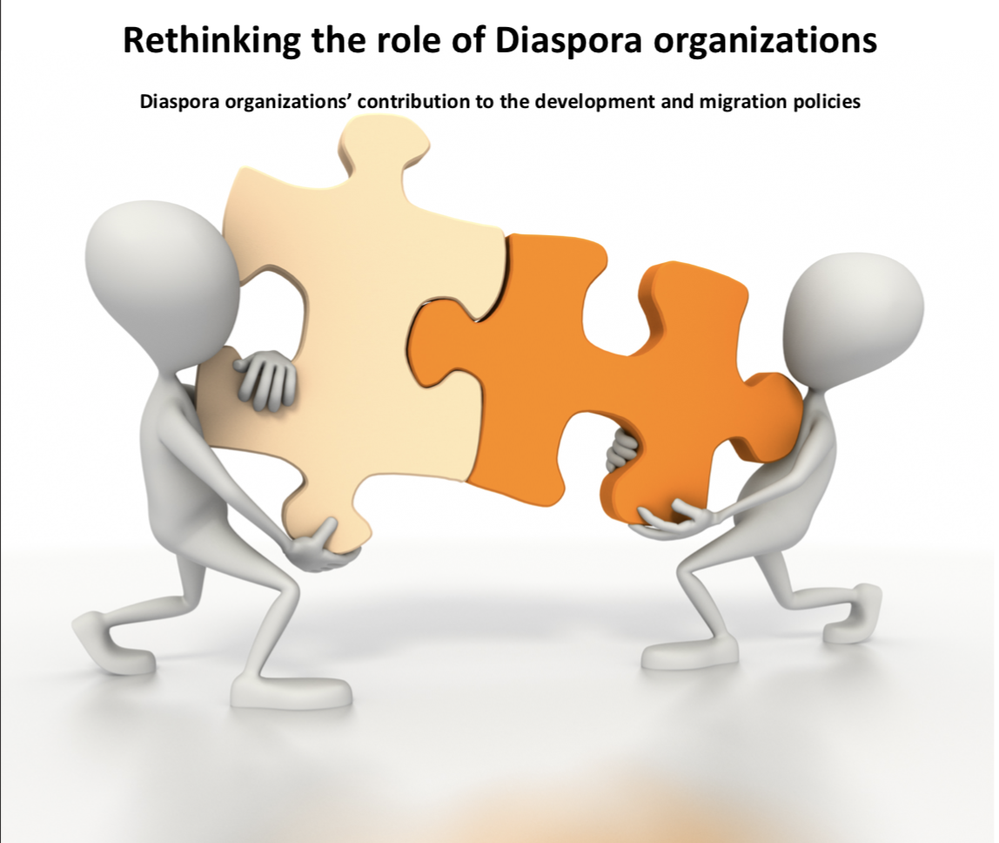

See also:
Read more:
This research topic arises from experiences gained during an internship at the Diaspora Forum for Development in Netherlands, but most of the positions and concerns expressed are generally valid.
The main thing to learn is that for an organization to work with government and corporate institutions, it needs to maintain a professional approach throughout.

“Development and government institutions at one side and Diaspora organizations on the other are situated differently within the migration and development debate. Diaspora organizations are closer to the migrants in the Netherlands and the people in their country of origin due to shared identity, background and experience. Because of that they claim it is easier for them to approach and activate those people both in the Netherlands and in the country of origin. In that sense Diaspora organization have a strong social capital. Through this social capital Diaspora organizations are capable of developing place specific measures which can in their believe contribute to development and participation. This way of working mostly arises from a personal attachment towards certain areas. This leads to certain ambitions and ideologies and a personal discourse.
Dutch government and development institutions work in a different way. Because they are part of bigger organizations and systems they have to be able to justify their way of working to convince their adherents. This to make sure support is secured. Because of that Dutch institutions maintain a more professional discourse instead of a personal one. These organizations agree that Diaspora organizations efforts do in some cases fit their own policies and could be useful. But, the problems arise when trying to incorporate the personal discourse of the Diaspora organization with the professional discourse of Dutch institutions. Dutch institutions question if through this personal discourse, arising from ambitions and ideologies, Diaspora organizations are able to give objective knowledge and information within the migration and development debate. In the past Dutch institutions experienced that those ambitious do not always fit the purpose which could lead to less effective projects or co-operation. Because of that Dutch institutions are not sure they are dealing with an independent autonomous actor useful in broader migration and development issues.
To deal with this concern Dutch institutions nowadays are only willing to work with Diaspora organizations under the circumstances that Diaspora organizations maintain the same professional standards as the rest of the actors involved in the process. This to assure a clear overview of Diaspora organizations backgrounds, objectives, spending and ideologies. Up till now it seems that Diaspora organizations due to their voluntary character are not able to meet these standards. This makes it hard for Dutch institutions to make decisions about which organizations they can co-operate with. But it is important to have this information since Dutch institutions want to maintain a intercultural and interreligious way of working. Diaspora organizations with radical ideologies are not desired in that sense since they do not fit in the process and can even influence the process negatively.
Due to this lack of clarity and past experiences Dutch institutions became more reticent before co-operating with Diaspora organization. Next to that there is a shift visible of Dutch institutions searching co- operation with actors in the wider society. Focus nowadays is not so much upon where you from but upon which skills you can deliver and how useful this skill is in the broader migration and development field. Except this focus upon specific specialized skills, nowadays, there is also put more concern upon public-private co-operation. This with the intention to find other means of finance to replace lost income caused by the cuts in the development aid sector.“